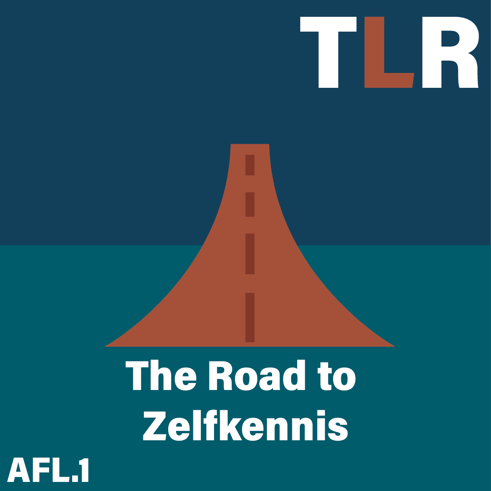
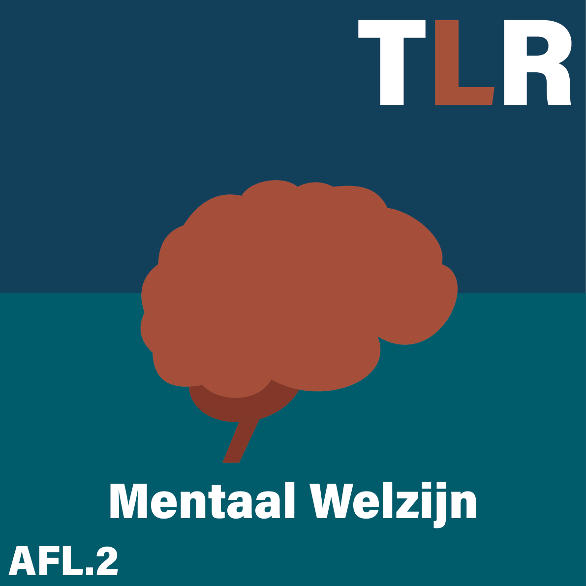
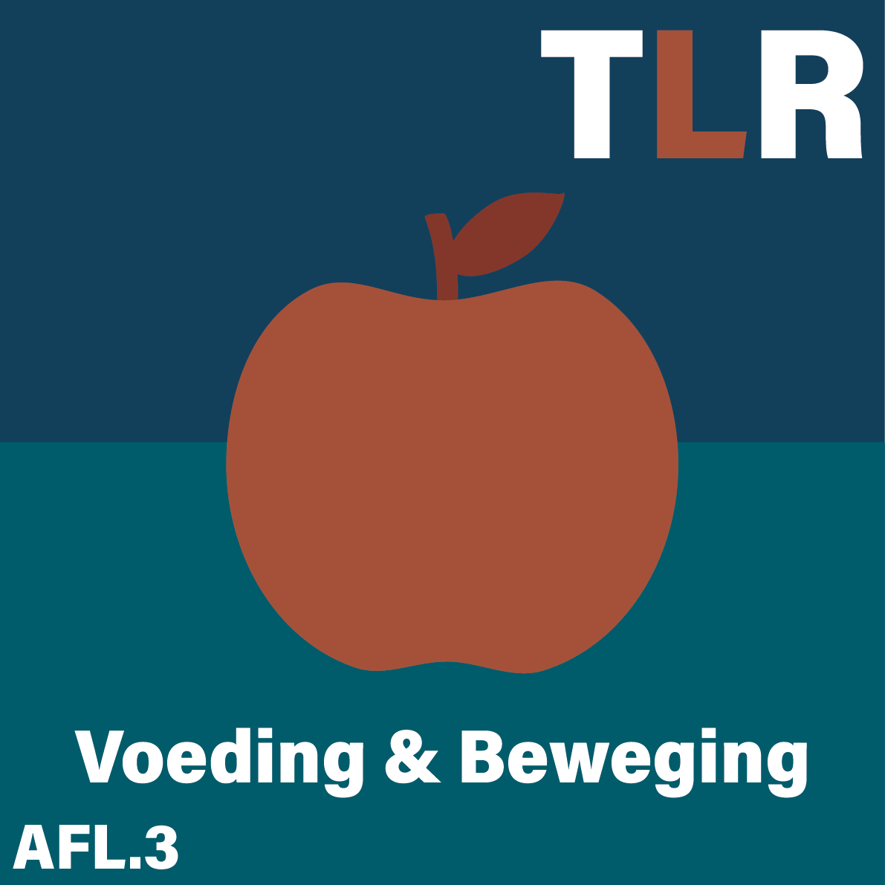
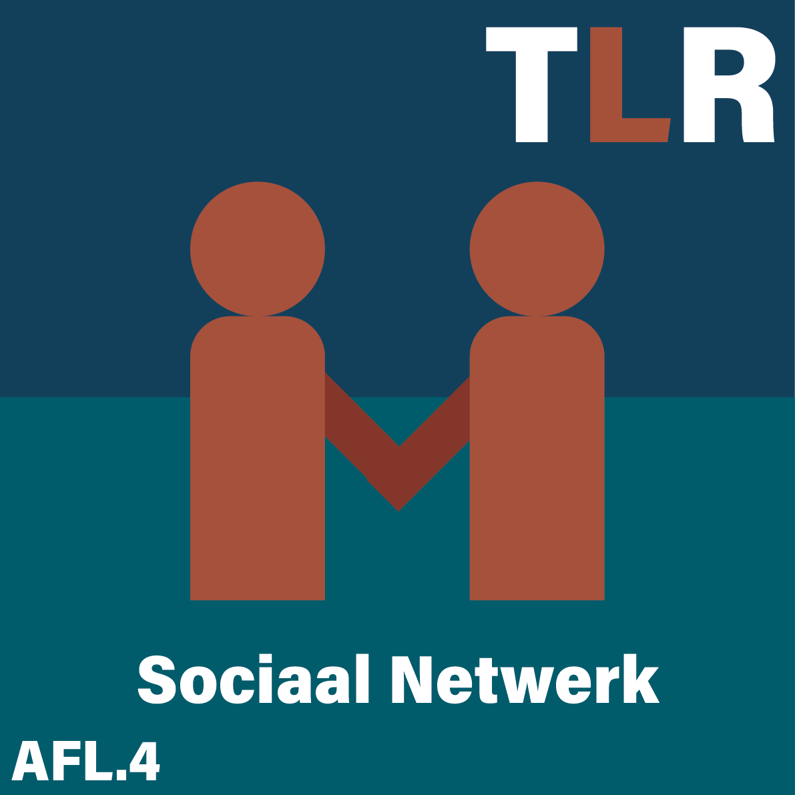
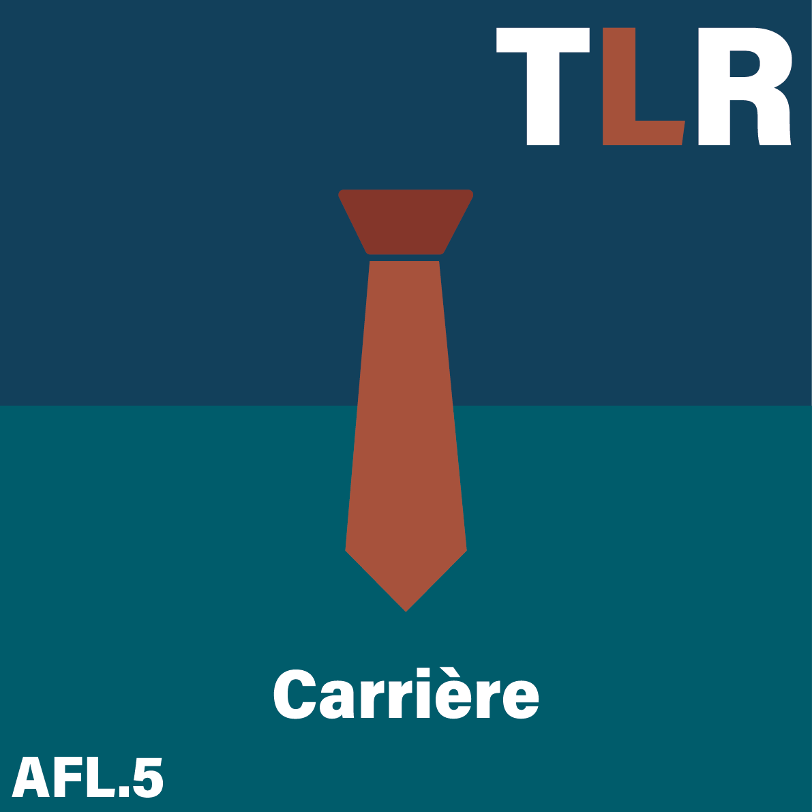
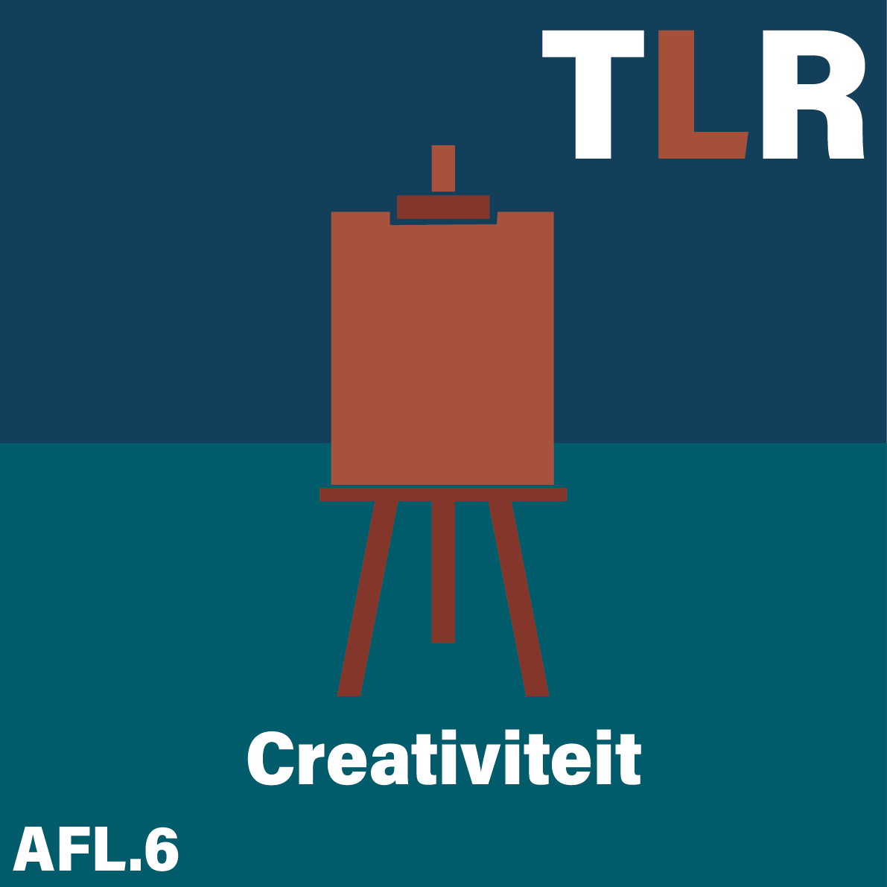

-

Aflevering 1
( The Life Road ) De sleutel to zelfkennis
S01A01 : In deze intro aflevering nemen we je mee in de reis die je gaat volgen met onze podcast. De afleveringen zijn ingedeeld op basis van de piramide van Maslow. Verder geven we tips over hoe je zelfkennis kan vergaren door middel van reflectie, het herkennen van je gedachtengang en het analyseren van je gedrag.
-

Aflevering 2
Mentale welzijn in balans.
S01A02 : In deze aflevering van The Life Road word samen met Thijs Launspach het belang van mentale gezondheid in verhouding tot persoonlijke groei besproken. Ook worden er strategieën gedeeld waardoor de stress aanzienlijk zal verminderen. Hierdoor zal de emotionele rust toekeren in uitdagende tijden.
-

Aflevering 3
Voeding en beweging: Jouw gezonde duo
S01A03 : In aflevering 3 van the Life Road gaan Tion, Luca en Ruben onderzoek doen naar effecten van voeding en beweging op de persoonlijke ontwikkeling en discipline. Leer hoe kleine aanpassingen in je dagelijkse routine grote positieve gevolgen kunnen hebben op je gezondheid.
-

aflevering 4
Netwerken voor geluk
S01A04 In deze aflevering van The Life Road word er besproken waarom sociale contacten van belang zijn voor jou eigen welzijn. Ontdek tips voor het verbeteren van je sociale kring en leer hoe goede verbindingen bijdragen aan persoonlijke groei.
-

Aflevering 5
Werk en geld: de sleutel tot jouw groei
S01A05 in deze aflevering duiken Tion, Ruben en Luca dieper in het onderwerp werk en carrière. Hier geven ze tips over hoe je makkelijk gewoonte van werk en carrière kan verbeter om uiteindelijk er meer voldoening uit te halen.
-

Aflevering 6
Creativiteit : De sleutel tot zelfontplooiing
S01A06 In deze aflevering van TheLifeRoad gaat het over hoe creativiteit kan helpen bij het leren kennen van jezelf en hoe je dit kan gebruiken om je zelf te verbeter om je best ik naar boven te halen.